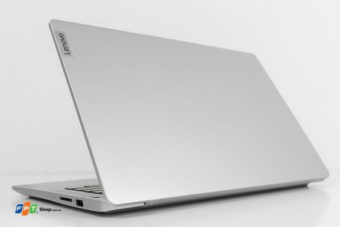

Lenovo Ideapad Slim 5 Light 14ABR8 is an ideal choice for those who need a super lightweight, high-performance, and versatile laptop for daily work and entertainment needs. With an incredible weight of only 1.17kg, it will be your comfortable and joyful companion every day.
Sleek and lightweight design
Lenovo Ideapad Slim 5 Light 14ABR8 stands out with its sleek and lightweight design, ideal for frequent travelers. With a "shocking" weight of only 1.17 kg and a thickness of just 1.71 cm, it easily fits into a backpack or handbag, providing maximum convenience for users. Carrying the Ideapad Slim 5 Light is completely light and comfortable, without any inconvenience. The case is finished with high-quality metal material in elegant Cloud Grey color, creating a modern and sophisticated look.
Clear and vivid display with 100% sRGB color accuracy
Equipped with a 14-inch FHD (1920 x 1080) IPS display, Lenovo Ideapad Slim 5 Light 14ABR8 provides clear images and wide viewing angles up to 178 degrees. With 300 nits brightness and 100% sRGB color coverage, the Ideapad Slim 5 Light ensures a vivid visual experience, suitable for both graphic work and entertainment. The anti-glare technology helps you work efficiently in various lighting conditions. The stunning display makes Lenovo Ideapad Slim 5 14ABR8 impressive for entertainment and fully capable of professional tasks.
Outstanding performance for work
Lenovo Ideapad Slim 5 Light 14ABR8 is equipped with an AMD Ryzen 5 7530U processor, delivering powerful performance and energy efficiency. This is a chip from AMD's 7000 series, with 6 cores and 12 threads, a maximum speed of 4.5GHz, capable of smoothly running all office applications and daily tasks. This CPU integrates AMD Radeon Graphics, allowing the machine to handle basic graphic tasks and light gaming. The laptop comes with 8GB RAM ensuring smooth multitasking, while the 512GB PCIe SSD provides ample storage space and fast data access speeds.

Advanced connectivity system
The Lenovo Ideapad Slim 5 14ABR8 laptop supports many connectivity ports, including 2 USB 3.2 Gen 1 ports, a versatile USB-C 3.2 Gen 1 port (supporting PD 3.0 and DisplayPort 1.2), an HDMI 1.4b output port, a 3.5mm headphone jack, and a microSD card slot, making it easy for users to connect with peripheral devices. Wireless connectivity is also very modern with Wi-Fi 6 and Bluetooth 5.2 standards ensuring fast network connection speeds, high stability, helping you maintain continuous work and entertainment performance without connectivity issues.
High durability and security
Lenovo Ideapad Slim 5 Light is equipped with an FHD 1080p camera with a privacy shutter, protecting your privacy during video calls. The advanced security system with TPM 2.0 chip encrypts data and protects important information from cybersecurity threats. Additionally, the machine is designed to meet MIL-STD-810H military durability standards, capable of withstanding harsh environmental conditions such as thermal shock, vibration, and high humidity, ensuring you can use it with peace of mind for a long time.
Enjoy Dolby Audio sound
Lenovo Ideapad Slim 5 Light is equipped with a stereo speaker system with Dolby Audio technology, delivering vibrant and clear sound quality. You can enjoy music videos or interesting movies, and also have better audio quality during online meetings. The realistic sound brings a great experience for listening to music, watching movies, and playing games, helping you relax after stressful working hours.
Up to 10 hours of battery life
With a 47 Wh battery, Lenovo Ideapad provides up to 10 hours of usage time, allowing you to easily complete your work without worrying about constantly charging the battery. The fast-charging feature is also a plus, allowing you to quickly recharge when needed, ensuring uninterrupted work and entertainment. Just 15 minutes of charging gives you an additional 2 hours of use, Lenovo Ideapad Slim 5 Light 14ABR8 is always ready for an active life.
With the MacBook Pro M4 2024, Apple has created a product that combines advanced technology and
premium design, meeting all expectations for those looking for top performance. With the new M4
chip, this product shows a breakthrough in performance, providing 3.4 times more powerful
processing than the version running the M1 chip.
Breakthrough power from Apple M4 chip
The MacBook Pro 14 2024 is powered by the new generation M4 chip, which can handle all tasks very
quickly and smoothly. Apple has upgraded the CPU performance both single-threaded and
multi-threaded, along with super-fast unified memory. Compared to the M1 chip version, the
MacBook Pro M4 is up to 3.4 times faster, making office tasks like Excel, Slack or web browsing
a breeze. In addition, the 24GB RAM capacity makes it easy to multitask between tasks without
interruption.
Ultra-realistic graphics, unlimited experience
With a powerful GPU and hardware ray tracing, the MacBook Pro M4 takes graphics processing to the
next level. It can run heavy games and complex design applications smoothly, making every frame
sharper and more vivid than ever. Dynamic Caching technology optimizes memory to boost GPU
utilization, ensuring fast response and stable performance even when handling graphics-intensive
tasks.
Excellent battery life with 24 hours of experience
With an impressive 24 hours of battery life, the MacBook Pro 2024 is proudly introduced by Apple
as the Mac model with the best battery life ever. You no longer have to worry about charging the
battery regularly during the day. Fast charging technology allows 50% energy regeneration in
just 30 minutes, ensuring it is always ready when you need it. Whether working in the office or
on a business trip, this laptop is always a reliable companion.
macOS: The Platform for Professionals
MacBook Pro M4 is optimized for macOS, smoothly supporting everything from Microsoft 365, Slack,
Zoom to specialized software like Adobe InDesign, Blender, Xcode, Logic Pro or Final Cut Pro.
Whether you are a designer, programmer or content producer, this ecosystem fully meets your
needs, helping to increase productivity and creativity.
Perfect ecosystem with MacBook Pro and iPhone
Using your MacBook and iPhone in sync, you'll enjoy the seamlessness that only the Apple
ecosystem can provide. You can reply to messages, copy data, or share files easily between two
devices in a snap. Everything from simple to complex becomes simpler than ever.
Apple Intelligence Personal Assistant
Apple Intelligence takes your work experience to the next level. You can use your personal
intelligence to write, edit text, or create images as you wish. Apple Intelligence also enhances
Siri with better language understanding, helping you communicate more effectively and work
smarter every day.
The ultimate Liquid Retina XDR display
Apple equips the MacBook Pro 2024 with a Liquid Retina XDR display with a maximum brightness of
up to 1,600 nits (for HDR content) and 1,000 nits (for SDR content in outdoor conditions),
providing a sharp and extremely realistic visual experience. This is an optimal plus for those
who work in graphics, effectively supporting us when we work in many different environmental
conditions. From creative design to viewing HDR content, everything becomes clearer and more
comfortable than ever.
Center Stage redefines the video call experience
The 12MP camera with Center Stage technology on the MacBook Pro M4 2024 will automatically keep
you in the center of the frame during video calls. In particular, the Desk View feature helps
share both your image and your desk at the same time, ideal for presentations, teaching or
online group work.
Powerful connectivity, ready for every need
MacBook Pro M4 2024 is fully equipped with necessary connection ports such as MagSafe 3,
Thunderbolt 4, 3.5mm headphone jack, SDXC card reader and HDMI port. In addition, Wi-Fi 6E and
Bluetooth 5.3 wireless interaction technology ensures fast, stable connection speed, helping you
always be ready to connect to peripheral accessories and internet systems.


 =======
=======


 >>>>>>> origin
>>>>>>> origin


 >>>>>>> origin
>>>>>>> origin